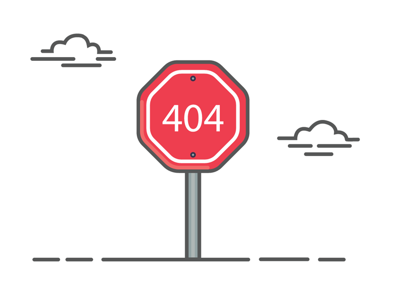

La page que vous avez demandée est introuvable. Essayez d'utiliser la navigation {% if site.search_enabled != false %}ou la recherche {% endif %}pour trouver ce que vous recherchez ou accédez à la page d'accueil de ce site.